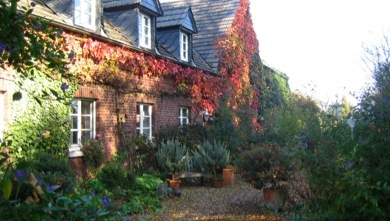
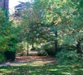
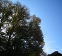

Der Haumannshof

... am Rande des Xantener Hochwalds, etwa 5 km von Xanten entfernt.
Die ehemals landwirtschaftlich genutzte Anlage des niederrheinischen Gutshofs wurde um die Jahrhundertwende erbaut und Ende der achtziger Jahre in originalgetreuem Stil liebevoll restauriert.
Der Haumannshof dient heute noch der ökologischen Selbstversorgung seiner Bewohner mit Eiern, Obst und Gemüse. Umgeben von Heuwiesen verfügt der Haumannshof über einen großen Bauerngarten, einen Naturteich und eine Parkanlage mit herrlichem altem Baumbestand. Mit seinem Park, den Liege-wiesen, einem großen Spielplatz und Möglichkeiten zum Grillen lädt der Hof zu Ruhe und Erholung ein.
Für Feriengäste ...
... hält der Hof neben Zimmern auch ein großes Appartement im Haupttrakt des Hofes bereit. Ebenso werden separat gelegene Ferienwohnungen angeboten. Alle Wohnmöglichkeiten sind liebevoll und sehr komfortabel in einem individuellen Ambiente eingerichtet.

Der Haumannshof liegt mitten im Grünen ...


